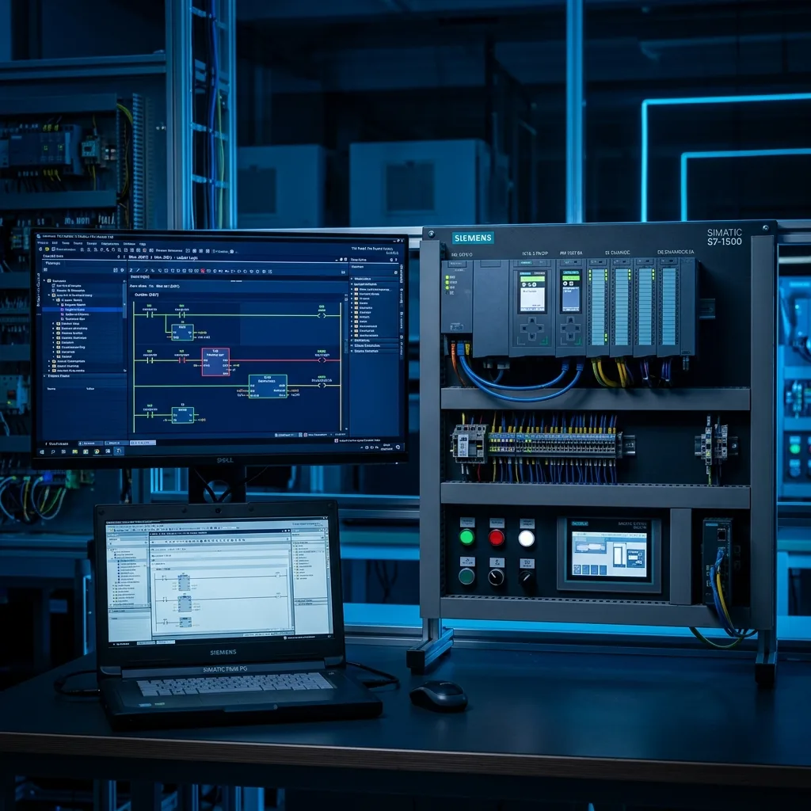

PLC Siemens S7-1200: Modelos de CPU, Cableado y Programación en TIA Portal

En los parques industriales de Saltillo, Ramos Arizpe, Derramadero y Monterrey, el PLC Siemens S7-1200 se ha convertido en el controlador estándar indiscutible para máquinas empacadoras, estaciones de atornillado, poka-yokes, bancos de pruebas hidráulicas y células de subensamble.
Si eres técnico de mantenimiento, ingeniero de proyectos o estudiante que busca entender qué es un PLC y cómo programarlo, esta guía práctica te llevará desde la anatomía física del hardware hasta las mejores prácticas de conexión con Siemens TIA Portal.
¿Dudas entre elegir S7-1200 o S7-1500 para tu proyecto? Revisa nuestra comparativa arquitectónica de familias: Comparativa PLC Siemens: S7-1200 vs S7-1500 y Aplicaciones en Coahuila.
1. ¿Qué es un PLC y qué hace especial al Siemens S7-1200?
Un PLC (Controlador Lógico Programable) es una computadora industrial reforzada diseñada para resistir ruido electromagnético, vibraciones, polvo y calor extremo en planta. Su misión fundamental es ejecutar de forma cíclica (en milisegundos) un programa:
- Lectura de Entradas: Detecta el estado de sensores ópticos, botones de paro de emergencia, fotoceldas y transductores de presión.
- Ejecución del Programa Lógico: Evalúa las condiciones booleanas y rutinas matemáticas en su microprocesador.
- Actualización de Salidas: Activa electroválvulas neumáticas, arranca servomotores, acciona contactores y envía señales a robots industriales.
¿Por qué el S7-1200 sustituyó al legendario S7-200?
A diferencia del viejo S7-200 (que usaba el software Micro/WIN y cables seriales PPI), el S7-1200 integra un puerto Ethernet / PROFINET nativo en todas sus CPUs, servidor web integrado, soporte para protocolo OPC UA para Industria 4.0 y compatibilidad total con la plataforma unificada TIA Portal.
2. Tabla Comparativa de Familias de CPU Siemens S7-1200
La familia S7-1200 cuenta con cinco procesadores modulares (con variantes estándar y versiones de seguridad Fail-Safe S7-1200F identificables por su carcasa amarilla):
| Modelo CPU | Memoria de Trabajo | E/S Integradas | Módulos de Expansión (SM) | Puertos PROFINET | Aplicación Típica |
|---|---|---|---|---|---|
| CPU 1211C | 50 KB | 6 DI / 4 DO / 2 AI | 0 (No expandible con SM) | 1 puerto RJ45 | Máquinas compactas y bombeo |
| CPU 1212C | 75 KB | 8 DI / 6 DO / 2 AI | Hasta 2 módulos SM | 1 puerto RJ45 | Bancos de prueba y celdas manuales |
| CPU 1214C | 100 KB | 14 DI / 10 DO / 2 AI | Hasta 8 módulos SM | 1 puerto RJ45 | El estándar industrial en Ramos Arizpe |
| CPU 1215C | 125 KB | 14 DI / 10 DO / 2 AI / 2 AO | Hasta 8 módulos SM | 2 puertos con switch integrado | Líneas continuas con HMI y servomotores |
| CPU 1217C | 150 KB | 14 DI / 10 DO (con 4 diff 1.5V) | Hasta 8 módulos SM | 2 puertos RJ45 | Control de movimiento ultra rápido (1 MHz) |
3. ¿Qué significan las siglas: DC/DC/DC vs AC/DC/RLY?
Al solicitar una cotización o seleccionar una refacción en almacén, verás siempre una nomenclatura de tres términos divididos por diagonales (ej. CPU 1214C DC/DC/DC). Estas siglas corresponden a:
- Primer término (Alimentación de la CPU):
DC= Requiere fuente conmutada de 24VDC;AC= Se alimenta directamente con 120V a 240VAC. - Segundo término (Entradas Digitales): Siempre es
DC= Opera con sensores industriales PNP o NPN a 24VDC. - Tercer término (Salidas Digitales):
DC= Salidas a transistor de estado sólido (24VDC);RLY= Salidas de contacto seco tipo relé mecánico.
⚠️ Regla de Oro para Mantenimiento Eléctrico:
Si requieres controlar un servomotor con tren de pulsos (PTO) o modulación por ancho de pulso (PWM), debes usar obligatoriamente salidas a transistor (DC/DC/DC). Los relés mecánicos de las versiones RLY no pueden conmutar a más de 1 Hz sin destruirse en pocos días.
4. Programación en Siemens TIA Portal
Para configurar y programar el S7-1200, la herramienta oficial de Siemens es TIA Portal (Totally Integrated Automation). Los pasos básicos para una puesta en marcha exitosa son:
A. Detección Online y Asignación de IP
Conecta un cable Ethernet directo de tu PC a la CPU. En TIA Portal dirígete a "Dispositivos Accesibles". El software detectará la dirección MAC del equipo sin importar en qué subred esté configurado tu adaptador de red, permitiéndote asignarle una dirección IP fija (ej. 192.168.0.1) en segundos.
B. Lenguajes de Programación Soportados (IEC 61131-3)
- LAD (Diagrama de Contactos / Escalera): El preferido por el 90% de los técnicos en plantas automotrices debido a su similitud con los circuitos eléctricos tradicionales.
- FBD (Diagrama de Bloques de Funciones): Ideal para lógica booleana, comparadores y compuertas lógicas continuas.
- SCL (Structured Control Language): Lenguaje de alto nivel tipo Pascal/C, perfecto para el manejo de recetas, cálculos matemáticos complejos, bucles
FOR / WHILEy comunicación con bases de datos SQL o escáneres MES.
C. Diagnóstico de LEDs de Estado
- RUN/STOP (Verde/Amarillo): Verde fijo indica ejecución normal; amarillo indica CPU detenida; parpadeo amarillo/verde indica arranque o descarga.
- ERROR (Rojo): Parpadeo indica falla de hardware, módulo desconectado o error de programación en un bloque de organización (OB).
- MAINT (Mantenimiento - Amarillo): Señala advertencias no críticas, como batería baja en módulos RTU o tarjeta SD solicitando atención.
5. Siemens S7-1200 vs Allen-Bradley CompactLogix en Coahuila
Ambas marcas dominan el corredor industrial Saltillo - Monterrey. ¿Cuál conviene elegir para un nuevo proyecto?
| Criterio | Siemens S7-1200 | Allen-Bradley CompactLogix (5069/1769) |
|---|---|---|
| Costo de Hardware | Muy competitivo para celdas pequeñas y medianas. | Costo más elevado, orientado a líneas completas. |
| Software de Programación | TIA Portal (licencia única para PLC + HMI). | Studio 5000 + FactoryTalk View por separado. |
| Comunicación Nativa | PROFINET RT / Modbus TCP / OPC UA. | EtherNet/IP CIP nativo. |
| Disponibilidad en Saltillo | Stock inmediato de refacciones locales y reemplazos. | Excelente red de distribución regional. |
⚡ Soporte Industrial 24/7 y Cursos Prácticos en Saltillo
¿Tienes una celda detenida por falla en un PLC Siemens S7-1200 o requieres capacitar a tus técnicos con constancia oficial DC-3 ante la STPS? En Robologix Automation contamos con bancos de entrenamiento reales con PLC Siemens S7-1200, pantallas HMI Comfort/Basic y variadores Sinamics G120.
Preguntas Frecuentes sobre el PLC Siemens S7-1200
Las versiones más actuales del firmware de las CPUs S7-1200 (firmware v4.5 en adelante) se programan típicamente con TIA Portal v16, v17, v18 o v19. Con la versión básica "TIA Portal Basic" es suficiente para programar cualquier CPU S7-1200 y pantallas Basic Panel.
No es estrictamente requerida para arrancar el PLC, ya que cuenta con memoria integrada. Sin embargo, en la industria de Coahuila se recomienda utilizarla para respaldo automático, permitiendo que el personal de mantenimiento reemplace una CPU averiada sin necesidad de conectar una laptop con TIA Portal.
Robologix Automation imparte el curso presencial intensivo de PLC Siemens S7-1200 y TIA Portal en Saltillo, con constancia oficial de habilidades laborales Formato DC-3 ante la Secretaría del Trabajo y Previsión Social (STPS).
¿Necesitas asesoría técnica, refacciones o capacitación en S7-1200?
Contacta directamente con nuestros especialistas de Robologix Automation en Saltillo.
Contactar por WhatsApp (+52 844 455 1869)